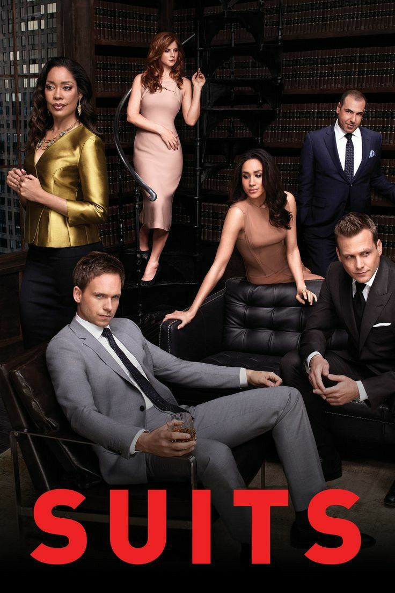

Creador: Aaron Korsh
Año de estreno: 2011
Duración: 9 temporadas
Género: Drama, comedia dramática y drama legal
Suits es una serie de drama legal que sigue la historia de Mike Ross, un joven con una memoria fotográfica excepcional que, a pesar de no tener un título universitario en Derecho, consigue trabajo como asistente y asociado legal en uno de los estudios de abogados más importantes de Nueva York.
Harvey Specter, uno de los abogados más destacados del estudio, descubre las habilidades de Mike y decide contratarlo. Para poder trabajar allí, ambos deben mantener en secreto que Mike nunca asistió a la facultad de Derecho. A partir de ese momento, la serie combina casos legales, conflictos personales, ambición profesional y las consecuencias de mantener este secreto.
Temporada 1: Mike Ross, un joven brillante con una memoria extraordinaria, consigue trabajo como asociado legal de Harvey Specter a pesar de no tener título de abogado. Harvey decide mantener su secreto mientras ambos comienzan a trabajar en importantes casos legales. Durante la temporada, Mike intenta demostrar que merece estar en el estudio mientras evita que los demás descubran la verdad sobre su pasado.
Temporada 2: El secreto de Mike comienza a estar cada vez más cerca de salir a la luz. Harvey y Mike enfrentan nuevos problemas dentro del estudio, mientras Jessica Pearson y Daniel Hardman luchan por el control de la firma. Las relaciones entre los personajes se vuelven más complicadas y las decisiones profesionales empiezan a tener consecuencias personales.
Temporada 3: La firma atraviesa cambios importantes y Harvey debe enfrentarse a nuevos rivales y desafíos internos. Mike continúa intentando avanzar en su carrera mientras mantiene oculto que nunca estudió Derecho. Al mismo tiempo, las relaciones entre Harvey, Jessica, Louis y Mike se vuelven cada vez más tensas debido a sus ambiciones y diferencias.
Temporada 4: Mike comienza a trabajar en banca de inversión y se encuentra enfrentado profesionalmente con Harvey. La competencia entre ambos genera nuevos conflictos. Mientras tanto, la firma continúa enfrentando problemas legales y económicos, y Mike debe decidir qué camino quiere seguir en su carrera.
Temporada 5: La situación de Mike finalmente llega a un punto crítico cuando su secreto es descubierto. Mike es acusado de ejercer la abogacía sin tener título y termina enfrentando graves consecuencias legales. Harvey y sus compañeros intentan ayudarlo mientras la firma también lucha por sobrevivir a las consecuencias del escándalo.
Temporada 6: Mike comienza a enfrentar las consecuencias de su condena y debe reconstruir su vida. Después de salir de prisión, intenta encontrar una nueva oportunidad profesional. Mientras tanto, Harvey y los demás abogados luchan por mantener la firma funcionando y recuperar su prestigio.
Temporada 7: La firma atraviesa una nueva etapa y varios personajes deben adaptarse a importantes cambios. Mike busca obtener finalmente una licencia legal mientras Harvey continúa enfrentando desafíos profesionales. Las relaciones entre los personajes también cambian y algunos comienzan a tomar decisiones sobre su futuro fuera de Nueva York.
Temporada 8: Después de la salida de Mike y Rachel, la firma debe reorganizarse y adaptarse a una nueva realidad. Harvey y Louis toman roles cada vez más importantes mientras aparecen nuevos abogados, entre ellos Samantha Wheeler. Los conflictos profesionales y personales continúan mientras todos intentan mantener unido el estudio.
Temporada 9: La última temporada presenta el enfrentamiento final por el futuro de la firma. Harvey, Louis, Samantha y el resto del equipo deben superar sus diferencias para proteger el estudio. Los personajes principales también toman decisiones definitivas sobre sus vidas personales y profesionales, cerrando las historias iniciadas a lo largo de la serie.
Podés encontrar más información sobre la serie en IMDb - Suits .